Technical Report — UE24CS352A Machine Learning Hackathon, PES University
Team name / members / SRNs: [to be filled in by the team]
Repository: [GitHub URL to be added after the team publishes it]
scripts/build_report.py. Every number and graph is
read from files under results/ and configs/ and can be regenerated with the commands in the README. Items marked
EVIDENCE GAP require the team (two-laptop demonstration screenshots, team details). The team must review, edit and be able to
explain every section before submission (see §9, AI-assistance disclosure).Each trip provides a noisy GPS track (.track: longitude, latitude, seconds), a directed road network (.nodes, .arcs)
and, for development data, the driven route as a chronological list of arc IDs (.route). We frame map matching as
candidate ranking: for every GPS point we generate the k = 8 nearest directed road arcs,
describe each (point, arc) pair with 14 features, train a binary classifier that scores "this arc is the one being driven", and decode the
whole trip with an HMM/Viterbi decoder over the directed road graph. The deployed system serves this pipeline through FastAPI on Laptop 1
and a Streamlit/Folium evaluator interface on Laptop 2.
Partitions. 80 training trips (fitting, 3-fold trip-grouped cross-validation and Bayesian optimisation), 10 student-testing trips
(development comparison only) and the reserved evaluator trips (not supplied at the time of writing; never used). Trip IDs in the two supplied
partitions are disjoint (checked by tests/test_integration.py).
src/data_loader.py). Files are parsed as headerless whitespace tables; node and arc IDs are
the zero-based row numbers and are never re-indexed, so every prediction refers to an original arc ID. Arc endpoints must be integer and in range,
coordinates must be finite with |lon| ≤ 180 and |lat| ≤ 90; invalid GPS rows are kept in place (flagged, predicted as −1) so the
observation index is never shifted. Timestamps are never re-sorted.src/preprocessing.py). Longitude/latitude are converted to metres with a local equirectangular projection
(Earth radius 6,371,008.8 m) centred on the median road node of the trip, so all distances and headings are physical. An audit against haversine
lengths (results/eda/projection_audit.csv) shows a maximum segment-length error of 1.14% on training networks and 0.49% on student networks.src/road_graph.py): adjacency lists, arc lengths and headings, in/out degrees, weak/strong components and
a cached, distance-capped Dijkstra used for transitions and route bridging.src/candidate_generation.py): a KD-tree on arc midpoints gives a search radius that provably contains the
8 nearest arcs (radius = 8th seed distance + half the longest arc); exact point-to-segment distances then rank them. The reference arc is
not injected into the candidate set; the resulting candidate miss rate on the student trips is 0.40%.src/reference_alignment.py). The .route file lists arcs, not one arc per GPS point, so a
monotone dynamic program aligns each GPS point to an occurrence in the reference sequence (squared distance / 20 m, capped, plus a heading term,
never moving backwards). These per-point labels are proxies. Training points whose aligned reference arc is more than 80 m away
(21,128 points, concentrated in trips 00000054 and 00000033) are excluded from fitting but all student points are scored.configs/training_samples.json.Computed by src/build_features.py on every file of the train and student-test partitions (results/eda/trips.csv).
| Check | train (80 trips) | student_test (10 trips) |
|---|---|---|
| observations | 208,417 | 19,160 |
| invalid gps | 0 | 0 |
| missing values | 0 | 0 |
| duplicate timestamps | 0 | 0 |
| reversed timestamps | 0 | 0 |
| gaps over 30s | 133 | 2 |
| alignment over 80m | 21,128 | 20 |
| reference breaks | 13 | 1 |
| zero length arcs | 100 | 6 |
| isolated nodes | 0 | 0 |
Observations. There are no missing/non-finite GPS values, out-of-range coordinates, duplicate or reversed timestamps in either partition, so no imputation was needed. The dominant irregularity is temporal gaps: the median sampling interval is exactly 1 s in every trip, but 133 training and 2 student gaps exceed 30 s (one training trip has a 153,064 s gap). The decoder therefore restarts at gaps instead of interpolating. Road networks are large relative to the trips (median 19,526 arcs per training trip vs 280 reference arcs), contain several weakly connected components (median 20) and some zero-length arcs (100 in training), which motivated candidate pruning and component checks before shortest-path search. GPS noise is moderate: the median distance from a GPS point to its aligned reference arc is about 4.7 m (train) / 4.9 m (student), with a 95th percentile of 14.4 m / 15.8 m.
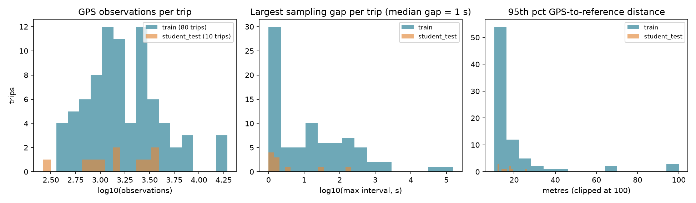
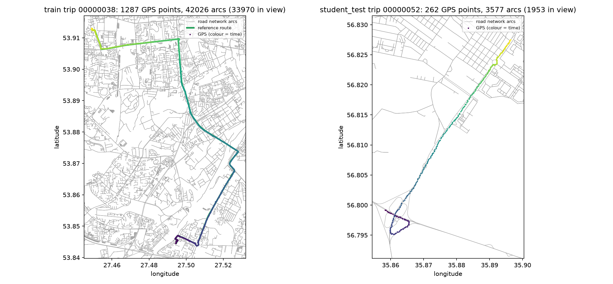
Patterns visible in the plots and maps: GPS points lie mostly within a lane-width of the true road but scatter more at junctions, roundabouts and under-passes (e.g. the loop at the south-west of trip 00000052), where several arcs are within a few metres; parallel and opposite-direction arcs make pure nearest-road matching ambiguous, which is why heading and connectivity information are needed.
| # | Feature | Purpose |
|---|---|---|
| 1 | distance_m | Perpendicular GPS-to-arc distance — the primary geometric evidence. |
| 2 | start_distance_m | Distance to the arc start node; separates short arcs near junctions. |
| 3 | end_distance_m | Distance to the arc end node; same role at the other end. |
| 4 | length_m | Arc length; long arcs attract projections, short arcs are junction pieces. |
| 5 | heading_difference | Angle between smoothed GPS heading (±2 points) and the directed arc — distinguishes opposite-direction and crossing arcs. |
| 6 | heading_valid | Whether the heading is reliable (moving > 3 m, no outlier, gap ≤ 30 s). |
| 7 | dt_s | Time since previous fix; context for gaps. |
| 8 | speed_mps | Implied speed (clipped at 60 m/s); signals noise/jumps. |
| 9 | in_degree | In-degree of the arc's start node (junction complexity). |
| 10 | out_degree | Out-degree of the arc's end node. |
| 11 | distance_rank | Rank 0–7 of the arc among the candidates of this point. |
| 12 | projection_fraction | Where along the arc the point projects (0 = start, 1 = end). |
| 13 | distance_margin_m | Distance minus the nearest candidate's distance — relative evidence within the point's candidate set. |
| 14 | gps_outlier | Implausible speed / invalid point flag. |
Absolute coordinates, arc IDs and anything derived from the reference route are deliberately excluded, so the classifier must generalise
to unseen cities and cannot memorise roads. The same function (src/feature_engineering.py) is used in training and in the API;
scripts/verify_existing.py confirms the features computed at inference time are bit-identical to the training cache, and the API
refuses to start if the saved feature order in configs/deployment.json differs. The distributions below (training sample) show
that aligned candidates have small distance, small distance margin, low rank and small heading difference; tree importances confirm that
distance_margin_m and heading_difference carry most of the signal (Decision Tree: 0.45 and 0.43; Random Forest: 0.22 and 0.36).
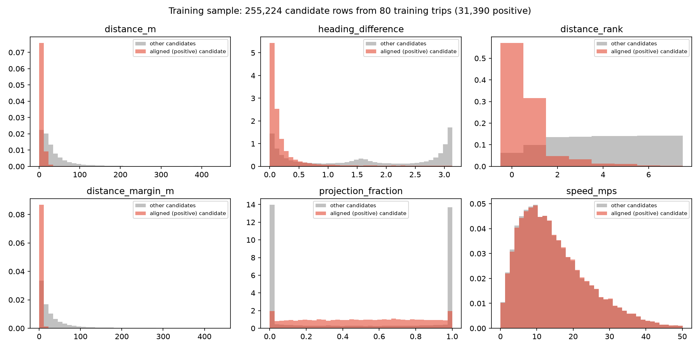
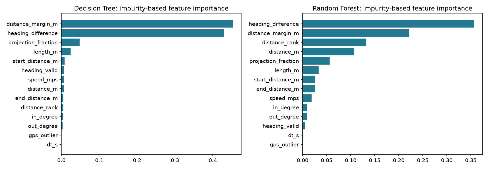
Protocol (src/train_models.py, seed 42): each model is evaluated with 3-fold GroupKFold on the 80 training trips
(all points of a trip are in the same fold; fold trip lists saved in results/models/cross_validation.json), then refit on all 80 training
trips and evaluated on all 19,160 points of the 10 student trips. Metrics: candidate-level accuracy/precision/recall/Macro F1
(binary, threshold 0.5) and log loss; observation-level Top-1 accuracy (highest-scoring candidate = aligned reference arc);
route continuity (share of consecutive matched points on the same or directly connected arcs); inference time = classifier scoring
of all 10 student trips. Linear/Gaussian models include a StandardScaler fitted inside the pipeline; tree models need none.
Primary selection metric: CV observation Top-1, because the task is to choose the right road for each point; models within
0.5 percentage points of the best are then compared on CV log loss (probability quality matters because the HMM uses the scores as emissions)
and then inference time. Rule and eligible models are saved in configs/selection.json: eligible = Random Forest, HistGradientBoosting;
selected = HistGradientBoosting.
| Model | Family | Key configuration | CV Macro F1 (mean ± sd) | Student Top-1 | Route continuity | Student Macro F1 | Log loss | Inference time (10 trips) |
|---|---|---|---|---|---|---|---|---|
| Logistic Regression | Linear logistic regression | C=1.0, max_iter=500 | 0.9030 ± 0.0030 | 83.66% | 91.57% | 0.9032 | 0.1158 | 0.024 s |
| Gaussian Naive Bayes | Gaussian naive Bayes | var_smoothing=1e-05 | 0.8169 ± 0.0022 | 81.00% | 91.03% | 0.8159 | 0.4918 | 0.049 s |
| Decision Tree | Decision tree | max_depth=12, min_samples_leaf=20 | 0.9047 ± 0.0031 | 84.67% | 91.19% | 0.9086 | 0.1331 | 0.010 s |
| Random Forest | Bagged random forest | n_estimators=100, max_depth=18, min_samples_leaf=5 | 0.9115 ± 0.0043 | 84.61% | 91.97% | 0.9110 | 0.0974 | 0.984 s |
| HistGradientBoosting | Histogram gradient boosting | max_iter=100, max_leaf_nodes=31, learning_rate=0.1, l2_regularization=1.0, early_stopping=False | 0.9134 ± 0.0044 | 85.28% | 92.23% | 0.9123 | 0.0949 | 0.828 s |
Additional measured metrics (student test): Logistic Regression: precision 0.823, recall 0.838, accuracy 0.9575, training time 0.5 s; Gaussian Naive Bayes: precision 0.554, recall 0.924, accuracy 0.8981, training time 0.1 s; Decision Tree: precision 0.844, recall 0.836, accuracy 0.9603, training time 1.8 s; Random Forest: precision 0.870, recall 0.818, accuracy 0.9622, training time 25.6 s; HistGradientBoosting: precision 0.858, recall 0.834, accuracy 0.9622, training time 2.6 s. Candidate miss rate is 0.40% for every model because all models share the same candidate set. All metrics are applicable to all five models (each outputs probabilities), so no N/A entries are needed.
A1. Why suitable? A linear, well-calibrated probabilistic baseline: the evidence for a candidate is largely monotone (closer, better aligned, lower rank → more likely), which a linear logit can represent, and its probabilities feed the HMM directly.
A2. Strengths and limitations. Strengths: fastest to train (0.5 s) and to score, stable across folds, good calibration (log loss 0.1158). Limitation: one linear boundary cannot express interactions such as "heading matters only when the vehicle is moving" or threshold effects in distance margin; large coefficients on the correlated distance features (start/end distance −16.5, length +20.7, margin −13.5 after scaling) show it compensating with correlated terms.
B5. Important hyper-parameters (initial values). C = 1.0 (inverse L2 strength), max_iter = 500, lbfgs solver, StandardScaler.
B6. Loss / objective. Binary cross-entropy (log loss) with L2 penalty.
C7–C8. Student-testing performance. Observation Top-1 83.66%, candidate Macro F1 0.9032, log loss 0.1158, precision 0.823, recall 0.838, route continuity 91.57%, sequence edit similarity 0.559. Confusion matrix [[TN, FP], [FN, TP]] = [[130765, 3431], [3088, 15996]]. CV: Macro F1 0.9030 ± 0.0030, Top-1 83.50%.
C9. Over- or under-fitting? No overfitting: in-sample, CV and student Top-1 are 83.55%/83.50%/83.66% and log loss 0.1166/0.1179/0.1158 — practically identical. Its ceiling is about 1 pp below the tree ensembles, a sign of mild underfitting (high bias) of a linear boundary.
A1. Why suitable? Included as the generative/probabilistic family: it models each feature per class with a Gaussian and is extremely cheap, a useful lower bound for what simple class-conditional likelihoods achieve.
A2. Strengths and limitations. Strengths: trivial training (0.13 s), highest recall (0.924). Limitations: the independence assumption is badly violated (distance, endpoint distances, rank and margin are strongly correlated), so evidence is double-counted, producing over-confident positives — precision only 0.554 and by far the worst log loss (0.4918). Several features are skewed or discrete (rank, flags), not Gaussian.
B5. Important hyper-parameters (initial values). var_smoothing = 1e-5 (variance floor), StandardScaler.
B6. Loss / objective. Maximum-likelihood estimates of per-class Gaussian means/variances; prediction by Bayes' rule (no iterative loss).
C7–C8. Student-testing performance. Observation Top-1 81.00%, candidate Macro F1 0.8159, log loss 0.4918, precision 0.554, recall 0.924, route continuity 91.03%, sequence edit similarity 0.524. Confusion matrix [[TN, FP], [FN, TP]] = [[120023, 14173], [1453, 17631]]. CV: Macro F1 0.8169 ± 0.0022, Top-1 81.98%.
C9. Over- or under-fitting? Underfitting (model bias): it is the weakest on all three splits (Top-1 82.05%/81.98%/81.00%); log loss is already poor in-sample (0.4320) and worse on the student set (0.4918), consistent with the wrong independence assumption rather than memorisation.
A1. Why suitable? Captures non-linear rules and interactions (e.g. small margin AND small heading difference) without scaling, and is interpretable.
A2. Strengths and limitations. Strengths: fastest inference (0.010 s), readable splits, Top-1 close to the ensembles. Limitations: piecewise-constant, poorly calibrated probabilities (log loss 0.1331) and high variance — see the train/CV gap below.
B5. Important hyper-parameters (initial values). max_depth = 12, min_samples_leaf = 20, Gini criterion.
B6. Loss / objective. Greedy minimisation of Gini impurity at each split.
C7–C8. Student-testing performance. Observation Top-1 84.67%, candidate Macro F1 0.9086, log loss 0.1331, precision 0.844, recall 0.836, route continuity 91.19%, sequence edit similarity 0.557. Confusion matrix [[TN, FP], [FN, TP]] = [[131252, 2944], [3136, 15948]]. CV: Macro F1 0.9047 ± 0.0031, Top-1 83.59%.
C9. Over- or under-fitting? Overfitting: in-sample Top-1 87.36% vs CV 83.59% (≈3.8 pp gap) and log loss 0.0811 vs 0.1502 (almost doubled) — leaves of 20 samples at depth 12 memorise training trips. The student result (84.67%) is close to CV, so the CV estimate was reliable.
A1. Why suitable? Bagging many decorrelated trees reduces the variance of a single tree while keeping its non-linear rules — a natural next step after the Decision Tree.
A2. Strengths and limitations. Strengths: second-best log loss (0.0974) and CV Macro F1, robust to noisy points. Limitations: largest model on disk (13.8 MB), slowest training (25.6 s) and about 100× slower inference than a single tree (0.98 s); it fits the training sample very closely.
B5. Important hyper-parameters (initial values). n_estimators = 100, max_depth = 18, min_samples_leaf = 5, bootstrap, sqrt features per split.
B6. Loss / objective. Each tree minimises Gini impurity on a bootstrap sample; probabilities averaged.
C7–C8. Student-testing performance. Observation Top-1 84.61%, candidate Macro F1 0.9110, log loss 0.0974, precision 0.870, recall 0.818, route continuity 91.97%, sequence edit similarity 0.575. Confusion matrix [[TN, FP], [FN, TP]] = [[131872, 2324], [3469, 15615]]. CV: Macro F1 0.9115 ± 0.0043, Top-1 84.48%.
C9. Over- or under-fitting? The largest in-sample/CV gap (Top-1 90.74% vs 84.48%; log loss 0.0622 vs 0.0998) shows that individual deep trees overfit, but averaging keeps the generalisation error low: CV and student results (84.61%) agree, and log loss is far better than the single tree.
A1. Why suitable? Boosting fits trees sequentially to the residual errors of the ensemble, directly minimising log loss, which suits both Top-1 ranking and HMM emissions; histogram binning keeps it fast on 255k rows.
A2. Strengths and limitations. Strengths: best CV Top-1, CV Macro F1, student Top-1, Macro F1 and log loss of all five models, small train/CV gap, 2.6 s training. Limitations: more hyper-parameters, sequential training, slower inference than a single tree; early stopping was disabled because its random validation split would mix trips.
B5. Important hyper-parameters (initial values). max_iter = 100, max_leaf_nodes = 31, learning_rate = 0.1, l2_regularization = 1.0, min_samples_leaf = 20 (default), early_stopping = False.
B6. Loss / objective. Binary cross-entropy (log loss) minimised by gradient boosting with L2 regularisation of leaf values.
C7–C8. Student-testing performance. Observation Top-1 85.28%, candidate Macro F1 0.9123, log loss 0.0949, precision 0.858, recall 0.834, route continuity 92.23%, sequence edit similarity 0.584. Confusion matrix [[TN, FP], [FN, TP]] = [[131566, 2630], [3161, 15923]]. CV: Macro F1 0.9134 ± 0.0044, Top-1 84.77%.
C9. Over- or under-fitting? Mild, controlled overfitting: in-sample Top-1 86.49% vs CV 84.77% and student 85.28%; log loss 0.0838 / 0.0970 / 0.0949. The small gap plus fold stability (CV Top-1 per fold 84.61%, 83.68%, 86.01%) indicate good generalisation.
None of the five models produces an epoch-wise training history in our configuration (HistGradientBoosting with early_stopping=False
stores no validation curve; the others are not iterative or not epoch-based), so no training/validation loss curves are shown. Instead,
over/under-fitting is assessed with in-sample vs. CV vs. student metrics computed from the saved models (scripts/report_figures.py,
results/models/fit_diagnostics.csv).


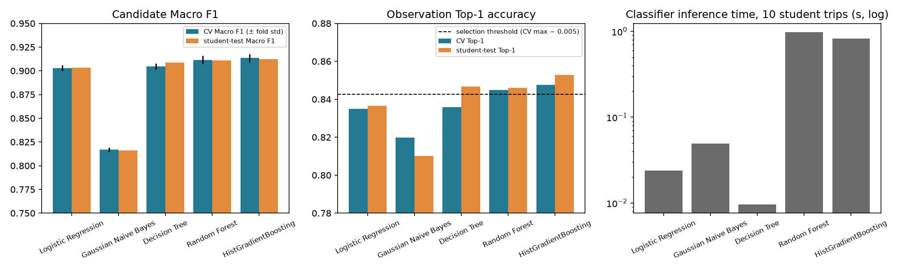
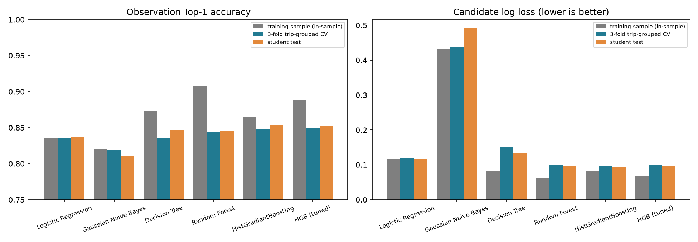


Figure 12. Student-test confusion matrices (candidate level, threshold 0.5).
Selection. Random Forest and HistGradientBoosting are the only models within 0.5 pp of the best CV Top-1. HistGradientBoosting has the lower CV log loss (0.0970 vs 0.0998), higher CV Top-1, a smaller train/CV gap and a 13.8 MB → 0.17 MB smaller artifact, so it was selected for tuning and deployment. The student-test results (not used for selection) agree: it is best on Top-1, Macro F1 and log loss.
Method. Optuna's Tree-structured Parzen Estimator (src/tune_model.py), seed 42, 3 random start-up trials then
7 TPE-guided trials (10 trials in total, 95.9 s of search + 4.3 s refit).
Every trial runs the same 3-fold trip-grouped CV on the 80 training trips; the student and evaluator partitions are not used in the search.
1–2. Search space (justified by the baseline's behaviour: more/larger trees for capacity, learning rate and L2 and leaf size for regularisation):
| Hyper-parameter | Distribution | Range |
|---|---|---|
| max_iter | integer, uniform | 70 – 180 |
| max_leaf_nodes | integer, uniform | 10 – 45 |
| learning_rate | float, log-uniform | 0.025 – 0.2 |
| l2_regularization | float, log-uniform | 0.01 – 20 |
| min_samples_leaf | integer, uniform | 15 – 80 |
3. Objective (maximised): mean group-CV (Top-1 accuracy - 0.02 * candidate log loss). Top-1 is the task metric; the small log-loss term prefers better-calibrated emissions for the HMM when Top-1 ties. The untuned baseline scores 0.84573 on the same objective.
4–5. Trials and best values. All 10 trials completed (results/tuning/trials.csv, trial_history.json with per-fold metrics).
Best trial #9: max_iter = 171, max_leaf_nodes = 44, learning_rate = 0.1193, l2_regularization = 0.01779, min_samples_leaf = 22; objective 0.84706.
| Trial | Objective | max_iter | max_leaf_nodes | learning_rate | l2_regularization | min_samples_leaf |
|---|---|---|---|---|---|---|
| 0 | 0.84609 | 111 | 44 | 0.1146 | 0.9467 | 25 |
| 1 | 0.84394 | 87 | 12 | 0.1514 | 0.9645 | 61 |
| 2 | 0.84557 | 72 | 44 | 0.1412 | 0.05023 | 27 |
| 3 | 0.84627 | 164 | 43 | 0.05037 | 0.03314 | 45 |
| 4 | 0.84507 | 163 | 23 | 0.05228 | 0.01146 | 60 |
| 5 | 0.84262 | 136 | 18 | 0.03051 | 1.259 | 76 |
| 6 | 0.84536 | 123 | 44 | 0.04328 | 0.5369 | 54 |
| 7 | 0.84226 | 85 | 38 | 0.02607 | 0.0151 | 45 |
| 8 | 0.84492 | 172 | 38 | 0.03307 | 9.396 | 25 |
| 9 | 0.84706 | 171 | 44 | 0.1193 | 0.01779 | 22 |
6. Did tuning help? Same partitions and metrics for both variants:
| Variant | CV Macro F1 | CV Top-1 | Student Top-1 | Student Macro F1 | Log loss | Inference time (10 trips) |
|---|---|---|---|---|---|---|
| baseline | 0.9134 | 84.77% | 85.28% | 0.9123 | 0.0949 | 0.828 s |
| tuned | 0.9125 | 84.90% | 85.25% | 0.9120 | 0.0957 | 1.303 s |
Only marginally, and only on the optimised criterion: CV Top-1 rose by 0.14 pp, but CV Macro F1
(0.9134 → 0.9125), student Top-1 (85.28% → 85.25%), Macro F1 and log loss all became slightly worse and
inference was ~1.6× slower (171 vs 100 trees, 44 vs 31 leaves, much weaker L2). The trial objectives span only
0.8423–0.8471, i.e. the model is insensitive to these hyper-parameters within the range, and the
tuned model's larger in-sample/CV gap (Figure 11) suggests the extra capacity is partly fitting training trips. Following the pre-declared rule (deploy
the tuned model if its CV objective beats the baseline), the tuned model is deployed as artifacts/best_model.joblib; the differences are
within fold-to-fold variation (CV Top-1 fold sd ≈ 1 pp), so we do not claim tuning improved generalisation.
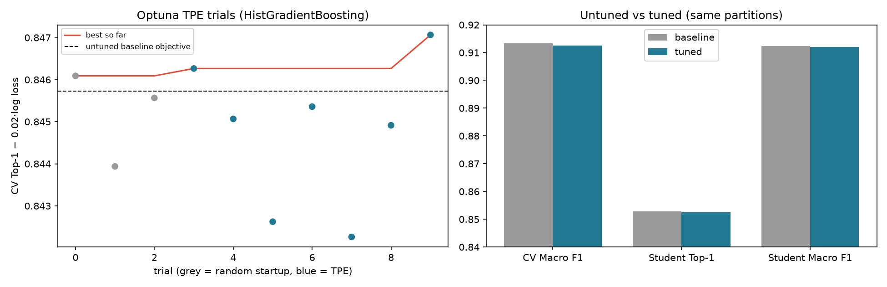
Implementation: src/hmm_viterbi.py (decoder and route assembly), src/inference.py (pipeline), parameters in
configs/deployment.json: β = 30 m, gap reset = 30 s, path-search cap = 3000 m.
1. Hidden states. At time t the states are the (up to) 8 candidate arcs of GPS point t, stored by their original arc IDs together with the projection fraction along the arc; the decoded state sequence is mapped straight back to original arc IDs (one per GPS point).
2. Emissions. The deployed classifier's probabilities for the candidates of point t, clipped to [10⁻⁷, 1] and renormalised over that point's candidates: log et(s) = log pt(s) − log Σ pt. The same model and features as in §3–4 are used, so the decoder consumes exactly the selected model's outputs.
3. Transitions. For candidates a (at t−1) and b (at t) we compute the network distance droad = remaining length of a + directed Dijkstra distance between a's end node and b's start node + travelled part of b (or the along-arc distance if a = b and the vehicle does not move backwards), and the straight GPS displacement dgps. Score = −|droad − dgps| / (β + 0.1·dgps); transitions with no directed path within 3 km, or longer than max(150 m, 60 m/s × Δt) are forbidden (−∞). Scores are normalised per source state in log space (log-sum-exp). Viterbi recurrence: Vt(b) = log et(b) + maxa[Vt−1(a) + log A(a,b)], with back-pointers and per-step max-normalisation for numerical stability, then back-tracking.
4. Missing candidates and gaps. A point without candidates (invalid GPS) gets −1 and ends the current chain; Δt ≤ 0 or Δt > 30 s also ends it. The finished segment is back-tracked and a new chain starts from emissions only. The student trips contain 26 such breaks in total.
5. Disconnected roads. If no candidate pair between t−1 and t has a finite transition (e.g. different weak components, one-way violations, or a jump longer than physically possible), the chain is split at t instead of forcing an impossible connection. In route assembly, consecutive different arcs are bridged with the real directed shortest path; when none exists a route boundary is recorded and no straight "invented" segment is drawn on the map.
6. Did the HMM improve the route? Comparison on all ten student trips with the deployed (tuned) classifier
(src/evaluate_hmm.py, results/hmm/):
| Method | Top-1 accuracy | Route continuity | Sequence edit similarity |
|---|---|---|---|
| Classifier only | 85.25% | 92.02% | 0.582 |
| Classifier + HMM/Viterbi | 83.19% | 96.76% | 0.716 |
| Trip | Points | Top-1 clf | Top-1 HMM | Contin. clf | Contin. HMM | Seq. sim. clf | Seq. sim. HMM | Breaks | Total s |
|---|---|---|---|---|---|---|---|---|---|
| 00000000 | 2503 | 94.29% | 93.77% | 95.64% | 98.64% | 0.560 | 0.617 | 5 | 4.54 |
| 00000007 | 1354 | 92.54% | 84.93% | 99.70% | 99.93% | 0.565 | 0.968 | 0 | 1.18 |
| 00000009 | 1049 | 80.84% | 82.65% | 89.03% | 93.51% | 0.711 | 0.806 | 2 | 1.59 |
| 00000040 | 2995 | 91.62% | 90.22% | 95.69% | 98.63% | 0.591 | 0.655 | 0 | 3.50 |
| 00000052 | 262 | 94.27% | 95.80% | 94.25% | 96.17% | 0.789 | 0.979 | 0 | 0.48 |
| 00000056 | 3958 | 85.14% | 86.08% | 89.06% | 96.01% | 0.678 | 0.842 | 6 | 7.45 |
| 00000065 | 768 | 89.19% | 85.94% | 93.09% | 97.13% | 0.608 | 0.784 | 4 | 0.87 |
| 00000076 | 1486 | 87.55% | 89.37% | 89.02% | 94.81% | 0.660 | 0.716 | 1 | 1.07 |
| 00000077 | 3911 | 71.21% | 64.33% | 89.62% | 96.01% | 0.183 | 0.222 | 7 | 1.86 |
| 00000091 | 874 | 84.78% | 81.46% | 88.32% | 93.81% | 0.470 | 0.573 | 1 | 1.42 |
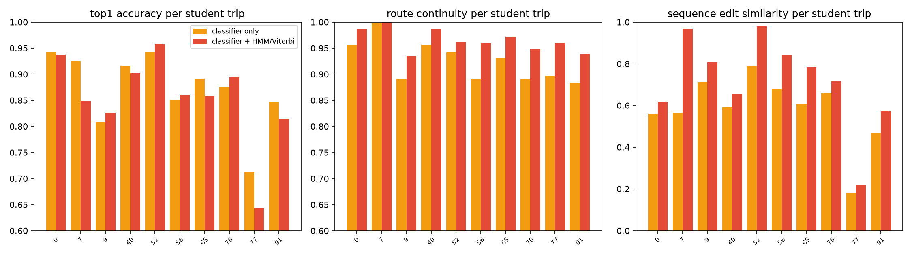
Discussion. At route level the HMM clearly helps: continuity rises on every trip (overall 92.02% → 96.76%) and the reconstructed arc sequence is much closer to the reference (edit similarity 0.582 → 0.716; e.g. trip 00000007 0.565 → 0.968, 00000052 0.789 → 0.979). Pointwise Top-1, however, falls overall (85.25% → 83.19%): it improves on 4 trips (00000009, 00000052, 00000056, 00000076) and drops on 6 (00000000, 00000007, 00000040, 00000065, 00000077, 00000091). The drops come from points near junctions: the decoder prefers a connected explanation and may assign a point to the adjacent arc it has just entered or left, which the proxy label (itself a geometric alignment) counts as wrong — trip 00000007 loses 7.6 pp of Top-1 while its sequence similarity jumps to 0.968. Trip 00000077 is hard for both methods (classifier 71.2%, sequence similarity < 0.25): it has 7 chain breaks (gaps/disconnections), and when the classifier's top candidates are wrong over a stretch the HMM can only choose the most consistent of those wrong candidates; we have not yet analysed this trip in detail. β and the gap/path limits were not tuned (an obvious next step, using training and student data only). Because the evaluator interface shows a route, the system deploys the HMM output.
Map code: src/visualizations.py::route_map. Offline maps for all ten student trips are generated by scripts/generate_maps.py
(results/maps/student_test/<trip>.html; each run re-predicts the trip and checks the result equals the saved HMM output —
10/10 matched). Layers: OpenStreetMap tiles; grey candidate road corridor (all candidate arcs of the trip);
blue GPS points; green reference route (offline maps only); orange dashed classifier-only
route (toggle); red HMM-predicted route; green/black start and end markers; a legend and an expanded layer control. The initial
view is fitted to the GPS extent. The evaluator UI uses the same function but without the reference or classifier layers.
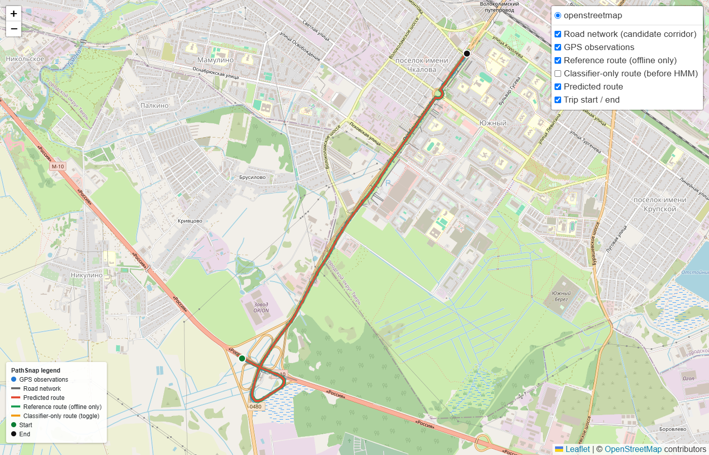
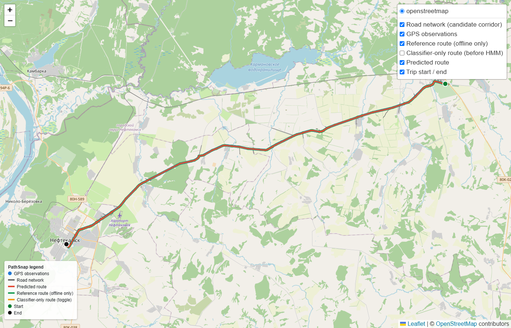
Laptop 2 (evaluator) Wi-Fi / hotspot Laptop 1 (model + API)
Streamlit ui/app.py ── GET /health, GET /trips ───────────────────────▶ FastAPI app/api.py (uvicorn :8000)
trip selector, Predict Route Predictor (best_model.joblib + configs/deployment.json)
metrics + Folium map ◀── JSON: predicted arcs, route, geometry, ── load trip → project → candidates → 14 features
metrics, timings (no labels) → classifier → HMM/Viterbi → route
→ server-side metrics vs .route (after prediction)
Backend (Laptop 1). GET /health reports whether the model and configuration loaded (503 "degraded" with the reason if an artifact is
missing, corrupt, has a different feature order or different parameters). GET /trips lists trip folders of the active mode found at request
time (PATHSNAP_MODE=student_test for development, evaluator_test for the reserved trips). POST /predict validates the ID
(422 malformed, 404 unknown), runs the full pipeline, and only afterwards reads the reference to compute Top-1 and continuity; reference arcs and per-point
labels are never returned. A middleware logs every request (path, status, duration) and the endpoint logs trip, observations, route length, accuracy and time.
UI (Laptop 2). Streamlit page with configurable API URL, connection/health indicator, mode banner, trip selector, Predict Route button with spinner, error/timeout messages, metrics (Top-1, continuity, server and round-trip time), the predicted arc sequence and the Folium map. It contains no model and reads no trip files.
Backend started with python -m uvicorn app.api:app --host 0.0.0.0 --port 8010; all ten student trips requested over real HTTP with the UI's
client (scripts/smoke_http.py), the Streamlit UI driven against it (scripts/check_ui.py), and screenshots captured in headless Edge
(scripts/capture_screenshots.py, 2026-11-18 13:13:09). 27 automated tests pass (results/logs/tests_final.log).
| Trip | Top-1 (API) | Server processing s | HTTP round trip s |
|---|---|---|---|
| 00000000 | 93.77% | 3.08 | 3.31 |
| 00000007 | 84.93% | 0.50 | 0.59 |
| 00000009 | 82.65% | 0.67 | 0.80 |
| 00000040 | 90.22% | 1.56 | 1.82 |
| 00000052 | 95.80% | 0.23 | 0.28 |
| 00000056 | 86.08% | 7.12 | 8.06 |
| 00000065 | 85.94% | 0.69 | 0.76 |
| 00000076 | 89.37% | 1.11 | 1.29 |
| 00000077 | 64.33% | 1.59 | 1.98 |
| 00000091 | 81.46% | 0.89 | 0.98 |
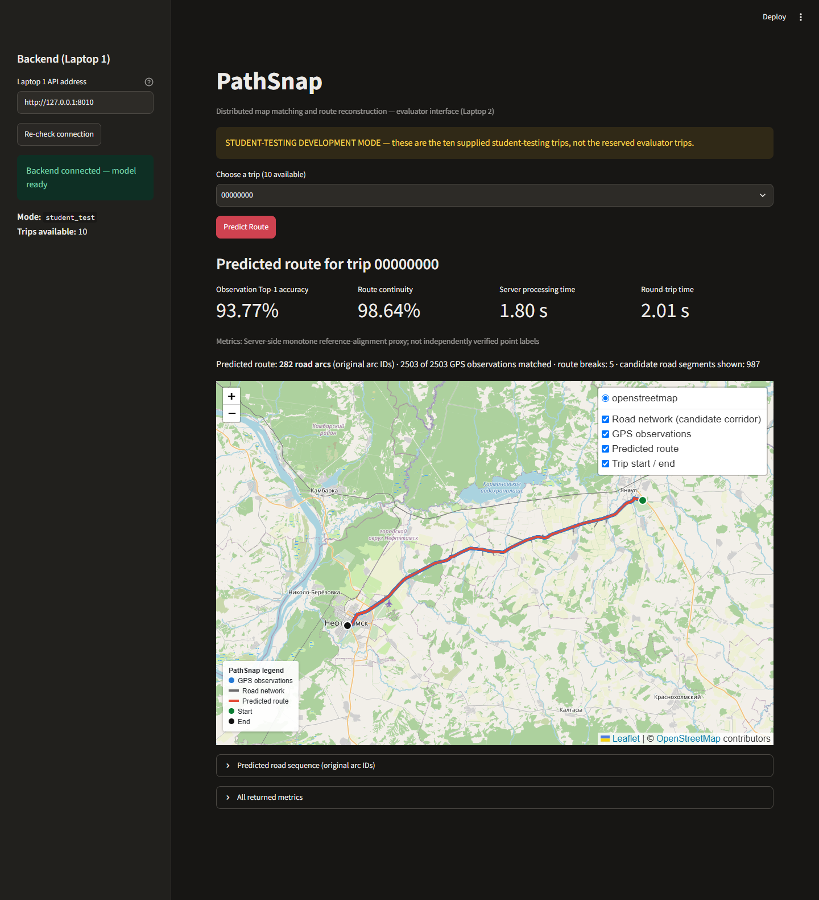
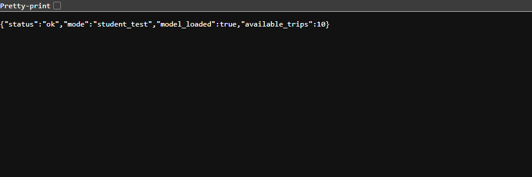
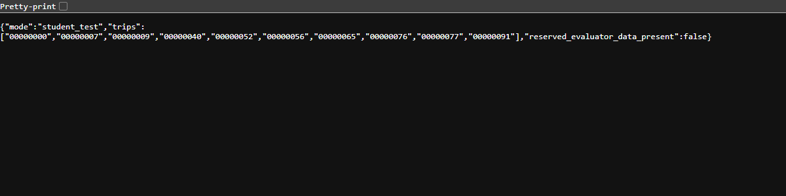
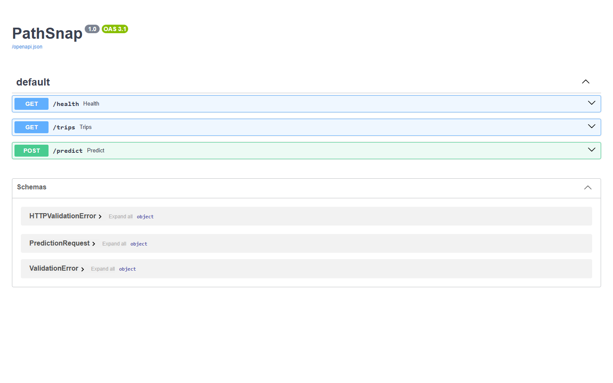
Excerpt of the backend log written during this verification (results/logs/api_server_final.log; text file, not a screenshot):
INFO: PathSnap model loaded; mode=student_test; available_trips=10 INFO: Uvicorn running on http://0.0.0.0:8010 (Press CTRL+C to quit) WARNING: PREDICT rejected trip=99999999 reason=unknown_trip INFO: PREDICT start trip=00000000 mode=student_test INFO: PREDICT trip=00000000 mode=student_test observations=2503 route_arcs=282 top1=0.937674790251698 inference_seconds=3.079 total_seconds=3.224 INFO: PREDICT start trip=00000007 mode=student_test INFO: PREDICT trip=00000007 mode=student_test observations=1354 route_arcs=124 top1=0.8493353028064993 inference_seconds=0.504 total_seconds=0.572 INFO: PREDICT start trip=00000009 mode=student_test INFO: PREDICT trip=00000009 mode=student_test observations=1049 route_arcs=516 top1=0.8265014299332698 inference_seconds=0.669 total_seconds=0.780 INFO: PREDICT start trip=00000040 mode=student_test
PREDICT trip=... requests. These have not been captured yet; all evidence above comes from one machine using 127.0.0.1.Exact PowerShell commands for both laptops, IP discovery, connectivity tests (Test-NetConnection, Invoke-RestMethod /health) and
Windows-Firewall guidance are in the README (§2–§4). Dependencies are pinned in requirements.txt (Python 3.11.9).
Limitations. (1) Per-point labels are proxies from a geometric alignment, so "Top-1 accuracy" inherits its ambiguity at junctions. (2) The HMM parameters were not tuned and emissions are classifier scores rather than a calibrated observation model. (3) Only 10 tuning trials and at most 400 points per training trip were used. (4) Student-test trips were used for development comparisons, so they are not a fully unbiased estimate; the reserved evaluator trips have not been seen. (5) The two-laptop network demonstration remains to be performed. (6) Map tiles require Internet on Laptop 2.
AI coding assistants were used during development (OpenAI Codex for the initial implementation; Anthropic Claude Code for the completion audit, UI/map improvements, test additions, figure and screenshot scripts and this report draft). All experiments were executed by the repository's code and all numbers and figures are generated from its saved outputs. [Team: edit this disclosure to match the event policy and your actual usage, and confirm that every member can explain the code, experiments and results.]